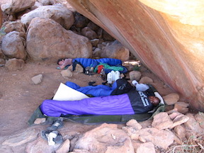
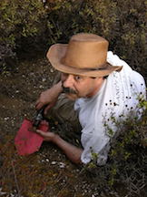
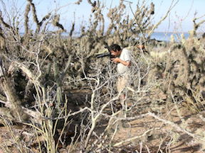
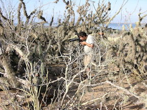
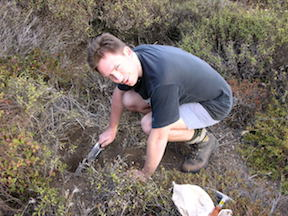

Create your own visited countries map or check out the JavaScript Charts.
The Arachnology Lab has travelled extensively to do fieldwork and has funded the collections trips of many other researchers and students. The map above shows where fieldwork had been conducted. A detailed list is below.
Africa
Angola, Benin, Botswana, Guinea-Bissau, Kenya, Malawi, Morocco, Mozambique, Namibia, Senegal, South Africa, Swaziland, Tanzania, Zimbabwe
Asia
Indonesia, Kazakhstan, Laos, Malaysia, Myanmar, Pakistan, Singapore, Sri Lanka, Thailand, Turkey, Uzbekistan, Vietnam
Caribbean
Aruba, Bahamas, Barbados, Bonaire, Curaçao, Dominican Republic, Grenada, Jamaica, Martinique, Puerto Rico, Saint Barthélemy, Sint Eustatius, Saint Marten, St. Kitts and Nevis, St. Vincent and the Grenadines, Turks and Caicos, U.S. Virgin Islands
Central America
Costa Rica, Guatemala, Honduras, Nicaragua, Panama
Mexico (by state)
Aguascalientes, Baja California, Baja California Sur, Chiapas, Chihuahua, Coahuila, Colima, Durango, Guanajuato, Guerrero, Hidalgo, Jalisco, Mexico, Mexico, Distrito Federal, Michoacan, Morelos, Nayarit, Nuevo Leon, Oaxaca, Puebla, Queretaro, San Luis Potosi, Sonora, Tamaulipas, Tabasco, Veracruz, Zacatecas
Middle East
Israel, Jordan
Oceania
Australia (Northern Territory, Queensland, Western Australia)
South America
Argentina, Bolivia, Brazil, Chile, Ecuador, French Guiana, Peru, Uruguay, Venezuela
U.S.A. (by state)
Arizona, California, Florida, Louisiana, Mississippi, Nevada, New Mexico, Texas, Utah








 



